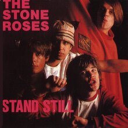
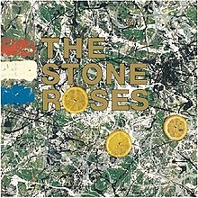
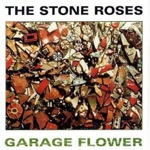
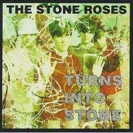

<!--2372036_Muhammad Sava Akbar Bastaman_B-->
<!DOCTYPE html>
<html lang="en">
<head>
    <meta charset="UTF-8">
    <meta name="viewport" content="width=device-width, initial-scale=1.0">
    <title>The Stone Roses</title>
    <link rel="stylesheet" href="styl.css">
    <link rel="stylesheet" href="style3.css">
    <link rel="preconnect" href="https://fonts.googleapis.com">
    <link rel='stylesheet' id='theme-font-awesome-css' href='//use.fontawesome.com/releases/v5.14.0/css/all.css' type='text/css' media='all' />
    <link rel="stylesheet" href="https://cdnjs.cloudflare.com/ajax/libs/font-awesome/4.7.0/css/font-awesome.min.css">
    <link rel="preconnect" href="https://fonts.gstatic.com" crossorigin>
    <link href="https://fonts.googleapis.com/css2?family=Abril+Fatface&family=Amiri:ital@1&family=Girassol&family=Titan+One&display=swap" rel="stylesheet">
    <link href="https://cdn.jsdelivr.net/npm/bootstrap@5.3.2/dist/css/bootstrap.min.css" rel="stylesheet" integrity="sha384-T3c6CoIi6uLrA9TneNEoa7RxnatzjcDSCmG1MXxSR1GAsXEV/Dwwykc2MPK8M2HN" crossorigin="anonymous">
</head>
<aside>
    <header style="background-color: aqua;">
    </header>
    <nav>
        <nav class="navbar navbar-expand-lg bg-secondary">
        <div class="container-fluid">
            
          <a class="navbar-brand" style="color:black" style="font-family: 'Amiri', serif;"> &nbsp;Bastaman</a>
          <button class="navbar-toggler" type="button" data-bs-toggle="collapse" data-bs-target="#navbarSupportedContent" aria-controls="navbarSupportedContent" aria-expanded="false" aria-label="Toggle navigation">
            <span class="navbar-toggler-icon"></span>
          </button>
          <div class="collapse navbar-collapse" id="navbarSupportedContent">
            <ul class="navbar-nav me-auto mb-2 mb-lg-0">
              <li class="nav-item">
                <a class="nav-link active" style="color:red" class="warnafontnav" aria-current="page" href="index.html">Home</a>
              </li>
              <li class="nav-item">
                <a class="nav-link" style="color:white" class="warnafontnav" href="#album">Albums</a>
                <li class="nav-item">
                </li>
                  <a class="nav-link" style="color:white" class="warnafontnav" href="#spotify">Spotify</a>
                </li>
            </ul>
          </div>
        </div>
        </nav>
    </nav>
      <!--Navbar-->
      <main>
        <aside>
            <h1>The Stone Roses</h1><br><br>
            <p>
                The Stone Roses are an influential alternative rock band that formed in Manchester, England in 1984. For most of their career, the band consisted of Ian Brown (vocals), John Squire (guitar), Gary “Mani” Mounfield (bass) and Alan “Reni” Wren (drums). Meshing 60s-styled guitar-driven rock with understated 80s dance beats and other influences, the band largely defined the British alternative scene of the late 80s and early 90s. After their eponymous 1989 debut album became an international sensation, countless other groups in the same vein became popular, including The Charlatans, EMF, and the Inspiral Carpets. However, the band was never able to capitalize on the promise of their first album and the whole ‘madchester’ scene due to acrimonious conflicts with their label, their manager, and others, waiting five years before they released their second record and slowly disintegrating in the year and half after that album’s release release.<br><br>

At the very beginning, the Stone Roses emerged from the remains of the artist “The Garage Flowers”, a Manchester-based band formed by schoolmates John Squire (guitar) and Ian Brown (vocals). In 1984, the Stone Roses officially formed as Squire and Brown added drummer Reni (born Alan John Wren), guitarist Andy Couzens, and bassist Pete Garner. The group began playing warehouses around Manchester, cultivating a dedicated following rather quickly.<br><br>

Around this time, the group was a cross between classic British 60s-inspired rock and touches of metal, with perhaps some goth music influence, which gave them a dark yet energetic ethos. Couzens left the group in 1987, being followed shortly afterward by Garner. Garner was replaced by Mani (born Gary Mounfield), and the group recorded its first single, “So Young”, which was released to little attention by Thin Line Records. At the end of 1987, the Stone Roses released their second single, “Sally Cinnamon”, which pointed the way toward the band’s blend of psychedelic music with hook-laden pop rock featuring ringing guitar riffs. By the fall of 1988, the band secured a contract with Silvertone Records and released “Elephant Stone”, a single that set the band’s mission of producing catchy neo-psychedelia for both rockers and dancers in stone.<br><br>

Shortly after the release of “Elephant Stone,” the Stone Roses’ bandwagon took off in earnest. In early 1989, the group was playing sold-out gigs across Manchester and London. In May, the Stone Roses released their eponymous debut album, which demonstrated not only a predilection for classic guitar hooks but also a contemporary dance music sensibility. ‘The Stone Roses’ received rave reviews and soon a crop of similar-sounding bands appeared in the U.K. By the end of the summer, the Stone Roses were perceived as leading a wave of bands with a similar sound as well as boosting the success of previous groups with that vibe such as the Happy Mondays.<br><br>

“She Bangs the Drums”, the third single pulled from the debut, became the group’s first Top 40 single at the end of the summer. In November, the group had its first Top Ten hit when “Fool’s Gold” climbed to number eight. By the end of the year, the band had moved from selling out clubs to selling out large theaters in the U.K. The ‘madchester’ scene had spread like wildfire.


</p>
              <br><br><iframe id="spotify" style="border-radius:12px" src="https://open.spotify.com/embed/artist/1lYT0A0LV5DUfxr6doRP3d?utm_source=generator" width="100%" height="352" frameBorder="0" allowfullscreen="" allow="autoplay; clipboard-write; encrypted-media; fullscreen; picture-in-picture" loading="lazy"></iframe>
            </aside>
        <article>
            
            <div style="padding-left: 140px;" class="sociallinks">
              <a href="https://x.com/thestoneroses?s=21" target="_BLANK"><i class="fab fa-twitter"></i></a>
              <a href="https://open.spotify.com/artist/1lYT0A0LV5DUfxr6doRP3d?si=_MVfo3cETM-u1LtEOWryNw" target="_BLANK"><i class="fab fa-spotify"></i></a><br><br>
              </div>
              <h2 id="album">Popular Albums</h2>
              <div class="row">
                <div class="column">
              
              <figcaption>Stand Still<br>1991</figcaption>
            </div>
            <div class="column">
              
              <figcaption>The Stone Roses<br>2089</figcaption>
            </div>
            <div class="column">
              
              <figcaption>Garage Flower<br>1996</figcaption>
            </div>
            <div class="column">
              
              <figcaption>Turns into Stone<br>1992</figcaption>
              </div>
              </div>
            </article>
    </main>
    <footer id="bgfooter">
      <p>&copy; 2024 My Music Website. All rights reserved.</p>
      <style>
      footer {
          background-image: url(https://cdn.pixabay.com/photo/2012/04/10/16/14/union-jack-26119_1280.png);
          background-repeat: no-repeat;
          margin: 30px;
          justify-content: center;
          position: sticky;   
          background-size: 100%;
          text-align: center;
          }
      </style>
  </footer>
</body>
</html>